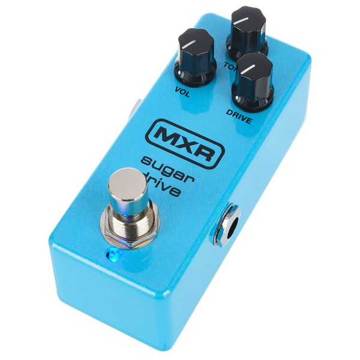
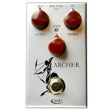

⚡ Pas le temps : le résumé 30 secondes
- 🏛️ Le Klon, c'est quoi ? L'overdrive transparent de Bill Finnegan, 8000 exemplaires entre 1994 et 2008, devenu mythique.
- 🎸 4 alternatives sérieuses : MXR Sugar Drive (mini, 139 €), KTR officielle (269 €, rare), J. Rockett Archer Clean (~250 €), EHX Soul Food (79 €).
- 💡 Verdict : la KTR reste la plus proche (Finnegan l'a designée lui-même), mais à 79 € la Soul Food fait 90 % du boulot.
Le Klon Centaur est probablement la pédale la plus surcotée de l'histoire de la guitare. Bill Finnegan l'a conçue dans les années 90 pour reproduire la dynamique d'un ampli poussé à fond. Il en a fabriqué environ 8000 exemplaires entre 1994 et 2008. Et puis quelque chose s'est passé : Jeff Beck en a adopté une, John Mayer aussi, Joe Perry, Nels Cline. Le buzz a explosé. Aujourd'hui, un Centaur d'origine se vend entre 5000 et 10 000 euros — pour une pédale qui coûtait 329 dollars neuve.
Pour le reste d'entre nous, il existe une économie florissante de « Klones » : des pédales qui chassent ce son d'overdrive transparent, ce médium magique vers 700 Hz, cette dynamique qui réagit au toucher. On en compare ici quatre, des plus modestes aux plus crédibles. Aucune ne remplacera un vrai Centaur. Mais aucune ne te coûtera une voiture d'occasion, non plus. Si tu débutes, commence plutôt par notre guide pour choisir ses pédales d'effets.
Du low-cost à l'officiel

2013 · Overdrive transparent · Le low-cost
EHX Soul Food
Electro-Harmonix
79 euros. Voilà le tarif d'entrée chez Electro-Harmonix pour un Klone honnête. Volume, Drive, Treble, true bypass : zéro fioriture, mais le boost médium est là, la dynamique est là, et le bruit de fond est étonnamment maîtrisé. Pour un débutant qui veut goûter au son Klon sans hypothéquer la maison, c'est imbattable.
🎸 L'histoire
EHX a sorti la Soul Food en 2013 en réponse directe à la spéculation autour du Klon. Le pari : démocratiser le son à un prix décent. Mission réussie, c'est devenu un des Klones les plus vendus de la planète.

2018 · Mini overdrive · Le compact
MXR Sugar Drive Mini
MXR / Dunlop
139 euros, format mini, fabriquée en Californie. La Sugar Drive embarque le circuit charge pump interne 18 V qui ouvre la dynamique comme le faisait le Centaur d'origine. MXR a passé du temps à peaufiner le potard Tone pour mieux gérer les aigus avec les simples bobinages — un défaut récurrent des clones bon marché.
🎸 L'histoire
Sortie en 2018, la Sugar Drive est devenue la référence des pedalboards saturés en place. Sa rivale directe : la Wampler Tumnus Mini. Les deux camps s'écharpent sur les forums, mais l'oreille a souvent du mal à départager.

2019 · Clean boost Klon · Le booster mid-range
J. Rockett Archer Clean
J. Rockett Audio Designs
L'Archer Clean est la version « tout-clean » du circuit Klon : la spécificité est de réduire l'action des diodes germanium pour livrer un boost ultra-propre avec la fameuse bosse médium du Centaur. Pas pour celui qui cherche de la saturation — pour celui qui veut juste rajouter cette couleur unique sur un signal clair.
🎸 Qui l'a utilisée ?
La gamme Archer de Jay Rockett est respectée par les pros pour sa fidélité au circuit Klon. Jeff Beck était tellement fan qu'il s'est fait construire une version personnalisée (« The Jeff Archer ») qu'il a utilisée sur son album Loud Hailer (2016) plutôt que son Klon d'origine.

2014 · L'officielle de Finnegan · Le mythe
Klon KTR
Klon / Bill Finnegan
C'est LA réédition officielle du Klon Centaur, designée par Bill Finnegan lui-même. Boîtier plus compact, switch true/buffered bypass ajouté, sinon : même circuit, mêmes diodes germanium triées sur le volet, même son. Sortie en 2014 à 269 dollars, elle reste à peu près introuvable et se revend aux alentours de 400-500 €. L'inscription gravée dessus dit tout : « Kindly remember : the ridiculous hype that offends so many is not of my making. »
🎸 Qui l'a utilisée ?
Tous ceux qui ont eu un Centaur d'origine et qui ne voulaient pas l'user sur scène. Plus accessible (en théorie) que les Centaur, plus chère que tous les clones, la KTR est le compromis officiel pour les puristes qui ont le budget.